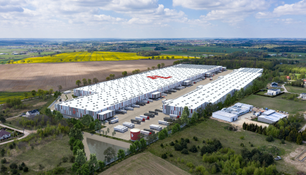
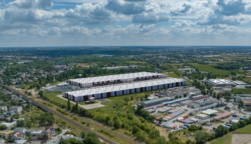

Przeanalizuj wybraną działkę pod kątem opłacalności zakupu wykorzystując narzędzia AI
Zastosowanie BuildMaX
Decyzja o zakupie działki jest podejmowana przez dewelopera na podstawie analizy chłonności, która określa procent
zabudowy w stosunku do całej działki. Im wyższa wartość procentu zabudowy (powyżej 40 %) tym bardziej opłaca się
zakup działki. Potrzeba także przeanalizować możliwe obszary problemowe takie jak np. duża ilość prac ziemnych czy
stanowiska archeologiczne. Proces ten jest czasochłonny ze względu na potrzebę analizy wielu dokumentów oraz
wykonanie planów zagospodarowania działki w oparciu o standard budowlany developera. Wykonanie standardowej
analizy chłonności terenu zajmuje zwykle kilka tygodni.
BuildMaX oblicza maksymalna powierzchnię zabudowy dla wybranej działki w oparciu o wybrany standard budowlany
oraz uwarunkowania przestrzenne i prawne.
Miejsce przechowywania towarów lub wydzielona przestrzeń przeznaczona pod działalność produkcyjną
Biuro
Przestrzeń o kategorii ZL przeznaczona na długotrwałe przebywanie ludzi.
Portiernia
Budnynek służący do nadzorowania dostępu do magazynu.
Pompownia
Budnynek techniczny do realizacji zadań związanych z wodą.
Standard magazynów
Dostępne moduły magazynów
8x8m
10x10m
12x12m
Standard biur
Biura zawierają m.in. :
Pomieszczenia biurowe
Sale konferencyjne
Toalety
Kuchnie
Szatnie dla pracowników fizycznych
Komunikacja
Zestawienie powierzchni
Dzięki aplikacji BuildMaX developer podaje wielkość modułu magazynowego oraz określa adres działki, którą jest
zainteresowany. Aplikacja posiadając te dane oblicza maksymalną powierzchnię zabudowy uwzględniając szereg
przepisów prawnych (MPZP, WT oraz Prawo Budowlane).
Przykładowe zestawanie wyliczonych powierzchni
Rodzaj
Procent
Powierzchnia
Powierzchnia zabudowy
55%
1200m2
Powierzchnia zieleni
20%
578m2
Powierzchnia utwardzeń
20%
242m2
Całkowita powierzchnia
1778m2
Przykładowe zestawanie parkingów
Rodzaj
Ilość
Miejsca postojowe dla samochodów osobowych
122
Miejsca postojowe dla samochodów cieżarowych
15
Eko rozwiązania
Fotowoltaika, źródło: pexels.com, autor: Pixabay
Panele fotowoltaiczne
Wydajność instalacji fotowoltaicznej po 10 latach mieści się w granicach 80%. Szacuje się, że panele fotowoltaiczne mogą pracować nawet przez 60 lat, bez przeszkód i większych napraw. .
Woda deszczowa jest wodą czystą, wolną od bakterii, ale w momencie styczności z dachem zostaje zabrudzona i zmienia się w wodę szarą. W systemach gromadzenia wody deszczowej wykorzystuje się cały układ filtrów, dzięki którym woda, zanim trafi do zbiornika, zostaje oczyszczona
WiecejStacje ładowania, źródło: pexels.com, autor: Mike Birdy
Stacje ładowania
Stacja ładowania do samochodu elektrycznego AC wykorzystuje prąd zmienny, a jej moc to od 3,7 kW do nawet 43 kW. Produkowana jest w dwóch wariantach – wiszącym, typu wallbox (montowanym na ścianie), i wolnostojącym.

Magazyn w Barniewice, źródło: Wizualizacja wykonana przez Paulina Kimak

Magazyn w Poznań, źródło: Wizualizacja wykonana przez Paulina Kimak
Przykład stosowanych oznaczeń terenu na podstawie planu miejscowego
§ 4.1. Ustala się następujące rodzaje przeznaczeń terenów:
1) U tereny usług;
2) U-A tereny biur i usług administracji;
3) U-H tereny usług handlu;
4) U-K tereny usług kultury;
5) U-N tereny usług nauki;
6) U-O tereny usług oświaty;
7) U-Op tereny usług oświaty – przedszkola;
8) U-Z tereny usług zdrowia;
9) U-P tereny usług opieki społecznej i socjalnej;
10) US tereny usług sportu i rekreacji;
11) MW tereny zabudowy mieszkaniowej wielorodzinnej;
12) ZPp tereny zieleni urządzonej;
13) ZPk tereny zieleni urządzonej towarzyszącej pomnikowi „Electio Viritim”;
14) KD tereny ulic publicznych, klasy ulic : G-główna, Z-zbiorcza, L-lokalna, D-dojazdowa;
15) KD-P tereny garaży podziemnych;
16) KD-PN tereny garaży wielopoziomowych;
17) KD-KMa tereny obiektów i urządzeń komunikacji miejskiej – przystanki końcowe autobusowe;
18) I-E tereny obiektów i urządzeń elektroenergetycznych - RSM.